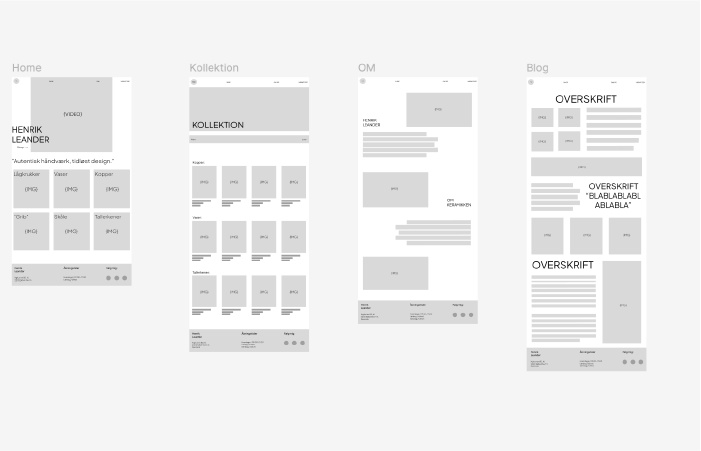
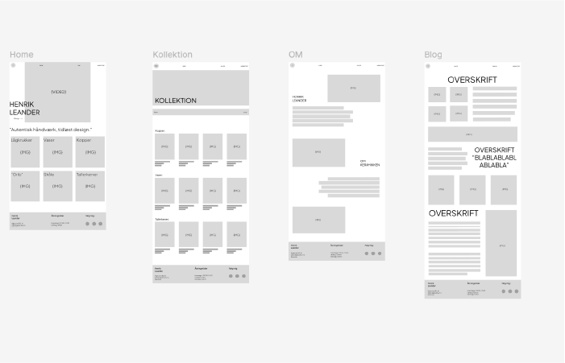

GRUNDLÆGGENDE
INDHOLD

PASSIONSITE
I første del af emnet Indhold skulle vi skabe en hjemmeside med en video, der fokuserede på en person med en passion. Opgaven blev udført i grupper af to, hvor vi samarbejdede om at planlægge og filme videoen. Efter optagelserne arbejdede vi hver især videre med at klippe og redigere videoen samt designe hjemmesiden individuelt, hvilket gav os mulighed for at sætte vores eget præg på projektet.
En vigtig del af opgaven var at integrere en Lottie-fil, som vi skabte i After Effects. Her lærte jeg at lave simple animationer, der kunne tilføjes til hjemmesiden for at gøre den mere dynamisk og visuelt interessant.
Jeg redigerede videoen i Premiere Pro, hvor jeg lærte at arbejde med overgange, tilpasse lyd og indsætte tekst på skærmen.


REDESIGN AF VIRKSOMHEDSSIDE
I den anden del af emnet skulle vi redesigne en virksomheds hjemmeside, og vi arbejdede i grupper af fire. Min gruppe valgte at redesigne en keramikhjemmeside. Vi brugte daglige scrum-møder og Trello til at holde styr på vores opgaver, hvilket gjorde samarbejdet effektivt og gav os et klart overblik over, hvad der var gjort, og hvad der manglede.
I denne proces har jeg udviklet mig meget, især i JavaScript, hvor vi lavede interaktive elementer. Jeg blev også bedre til at bruge grid-layouts i CSS og til at forstå grundlæggende designprincipper for at skabe en brugervenlig hjemmeside. Derudover lærte jeg, hvor vigtig den forberedende proces er, når man designer en hjemmeside, og hvordan man sikrer, at designet møder både brugerens behov og virksomhedens mål.
 
